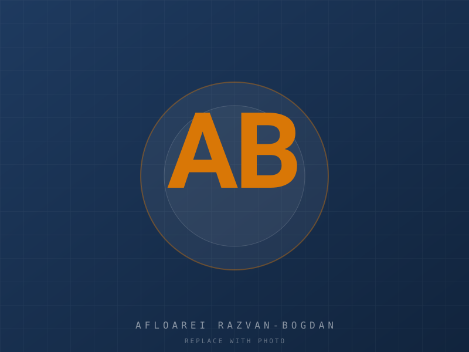

Open to opportunities
Engineering Excellence
Geodetic Engineer
Infrastructure Designer
AI Automation Builder
Delivering surveying, cadastral, civil infrastructure and AI-powered engineering solutions across Europe.

Why me
Why companies hire me
A blend of field experience, technical depth, and modern engineering practice.
Nearly a decade of experience
Hands-on engineering since the start of my career.
Office + field experience
Comfortable on construction sites and at the design desk.
End-to-end delivery
From field survey to permit-ready drawing package.
Surveying expertise
Topographic, cadastral, engineering and GNSS surveys.
Infrastructure design
Roads, bridges, utilities and institutional buildings.
Public administration
Worked with town halls, county councils and ministries.
Government-funded projects
Delivered projects under national investment programs.
European-funded projects
Including PNRR (Romania) and similar EU instruments.
AI-powered engineering
LLM agents and automation integrated into daily workflows.
Workflow automation
Eliminating repetitive tasks with n8n, scripts and tools.
Fast learner
New software, regulations, languages — picked up quickly.
Highly adaptable
Equally at home on a site, in a meeting or behind a screen.
Detail-oriented
Drawings, numbers, contracts — verified twice.
International mindset
Open to relocation and cross-border collaboration.
Process optimization
Always looking for the faster, cleaner way.
Strong communicator
Clear technical writing and concise verbal updates.
About
Engineering with a modern edge
I create technical AutoCAD drawings for topographical surveys, geodesy and cadaster, as well as full design projects in civil engineering — institutional buildings, roads and bridges.
I have delivered projects funded by private clients (institutions and private investors), by the Romanian state, and through European Union instruments — including PNRR, Romania's implementation of the EU Recovery and Resilience Facility (RRF), the main component of NextGenerationEU, the EU's COVID-19 recovery programme. I am open to working with foreign funds, ideally alongside a partner who has already accessed them, so that we can structure the project efficiently from day one.
I combine traditional engineering with modern digital tools: surveying, engineering survey, cadastre, infrastructure design, GIS, GNSS, LiDAR and drone surveys, construction and civil engineering work — all documented through digital transformation, AI automation, workflow optimization, knowledge management and continuous learning.
In the office I focus on making every process I touch as efficient as possible and on delivering the best service I can. I use AI agents — Hermes, a VPS work PC and LLMs — as assistants. They support my work, they don't replace it: the success of the project comes first.
Services
What I deliver
End-to-end engineering — from field survey to permit-ready drawing package, with AI built in.
Surveying & Geospatial
Field measurement, geodesy and data acquisition.
- Topographic survey
- Engineering survey
- Cadastre & land registry
- GNSS measurements
- Drone survey & LiDAR processing
- GIS analysis
Infrastructure Design
Civil engineering design and technical documentation.
- Road design
- Bridge design
- Utilities mapping
- Construction layout
- Civil & institutional buildings
Documentation & Consulting
Permit packages, technical memos and funding support.
- Engineering documentation
- Project documentation
- Funding documentation (EU / state)
- Technical consulting
Digital Engineering & AI
Modern tools that multiply the value of every drawing.
- CAD drafting (AutoCAD)
- AI automation for engineering workflows
- Workflow automation
- Digital engineering
Specializations
Deep technical focus
Where I deliver the most value.
- Cadastral surveying
- Engineering surveying
- Topographic surveying
- Infrastructure design
- Road infrastructure
- Railway infrastructure
- Utility mapping
- Construction survey
- GIS analysis
- GNSS measurements
- LiDAR
- Drone mapping
- Geospatial data processing
- BIM collaboration
- Digital engineering
- AI-assisted engineering
- Automation
Technologies
My toolkit
Software, equipment and digital skills I work with daily.
Engineering software
- AutoCAD
- Civil 3D
- Revit
- ArcGIS
- QGIS
- TopoLT
- ProfLT
- Microsoft Office
Survey equipment
- GNSS receivers
- Total station
- Drone
- LiDAR scanner
Digital skills
- Python
- Git
- Docker
- n8n
- AI agents (OpenAI, Claude, Gemini)
- Automation
- Knowledge management
- Cloud platforms
Skills
Competencies
Grouped by area of practice.
Engineering
Design, calculation, technical documentation, QA.
Surveying
Total station, GNSS, drone, LiDAR processing.
GIS
ArcGIS, QGIS, geospatial analysis, mapping.
Programming
Python, scripting, data processing.
Automation
n8n, AI agents, document & workflow automation.
Management
Project coordination, scheduling, budgeting.
Communication
Technical writing, client liaison, presentations.
Leadership
Leading small teams, mentoring juniors.
Problem solving
Pragmatic solutions under constraints.
Analytical thinking
Data-driven decisions, risk evaluation.
Project coordination
Multi-stakeholder, multi-discipline delivery.
Industries
Where I've worked
Sectors I have direct experience in.
- Transportation
- Railways
- Roads
- Bridges
- Utilities
- Renewable energy
- Land development
- Construction
- GIS
- Mining
- Agriculture
- Smart cities
- Public administration
- Government projects
- Private development
- Infrastructure
Work philosophy
What I stand for
Quality
Every drawing, every calculation — done right the first time.
Accuracy
Measure twice, document once.
Efficiency
Automate the repetitive; spend time on the critical.
Innovation
Try new tools, new methods, new approaches.
Continuous improvement
Every project teaches something for the next one.
Digital transformation
Move paper workflows into structured digital pipelines.
Automation
If I do it twice, I script it once.
Lifelong learning
New regulations, new software, new languages.
Professional integrity
Honest reporting, even when it's inconvenient.
Engineering excellence
The result justifies the rigor.
AI & Automation
Modern engineering, modern tools
I integrate AI and automation into my engineering workflow — as assistants, not replacements.
AI agents (Hermes-style)
Task-specific LLM agents I run locally or on a VPS.
Workflow automation (n8n)
Multi-step pipelines that move data between tools automatically.
Knowledge systems
Structured engineering knowledge, searchable and reusable.
Engineering productivity
Faster drafting, fewer manual errors.
Digital documentation
Clean, structured, machine-readable project records.
Document analysis
Extracting structured data from PDFs and scans.
Data organization
Turning raw measurements into clean datasets.
Prompt engineering
Reliable outputs from LLMs through careful prompting.
Local AI
Privacy-friendly on-device models where they make sense.
Cloud AI
Frontier models when the task requires it.
Documented methodology
Every automation I ship has a written process behind it.
Career timeline
How I got here
From technician to AI-aware engineering consultant.
Survey Technician
Started in field surveying — total station, GNSS, topographic and cadastral measurements.
Geodetic Engineer
Took responsibility for full surveying deliverables and OCPI submissions.
Infrastructure Designer
Moved into civil engineering design — roads, bridges, institutional buildings.
Project Engineer
End-to-end project ownership: scope, design, documentation, client interface.
AI Automation Builder
Started integrating LLM agents and n8n workflows into engineering processes.
Future Vision
Bridging classical engineering with AI-native digital engineering.
Certifications
Professional certificates
No certificates added yet — drop your first one in script.js under the certs.* keys.
International availability
Where & how I can work
Flexible engagement models across Europe and beyond.
- Available across Europe
- Open worldwide
- Open to relocation
- Remote collaboration
- Contract work
- Long-term employment
- Freelancing
- Consulting
Languages
Languages I work in
Professional working languages.
Romanian
Native (C2)English
Professional (C1)French
Basic (A2)Projects
Selected projects
Click any project to open its dedicated page — drawings, problem, solution, technologies, lessons learned.

TopographyTopographical Survey — Urban AreaAutoCADTotal StationGNSS 
CadasterCadastral Plan — Lot SubdivisionAutoCADOCPI 
Civil BuildingInstitutional Building — SchoolAutoCADBuilding Code 
RoadRoad Design — County RoadCivil 3DRoad Standards 
BridgeBridge Project — Concrete BridgeAutoCADStructural 
PNRR / EUPNRR-Funded Civic ProjectAutoCADRRFNextGenEU
Contact
Let's talk about your project
Send a short brief, the site address and a timeline. I'll reply within one working day.
Include any relevant drawings, surveys or coordinates if available — it speeds up the first reply.